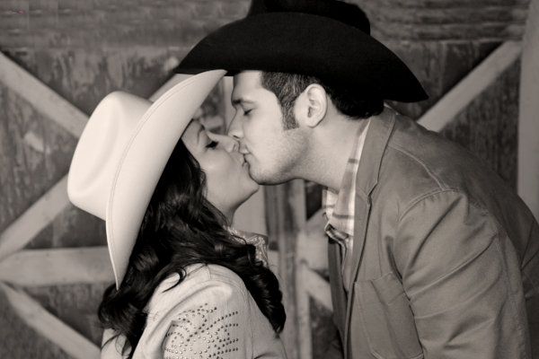
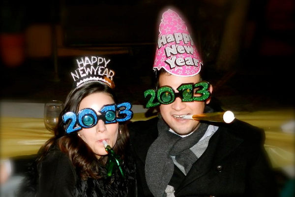
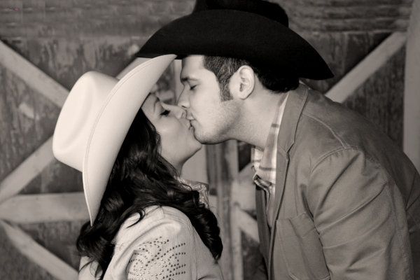
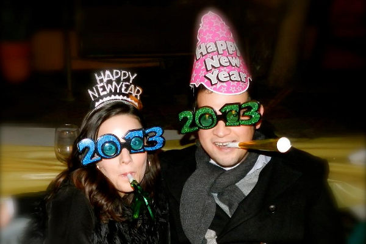
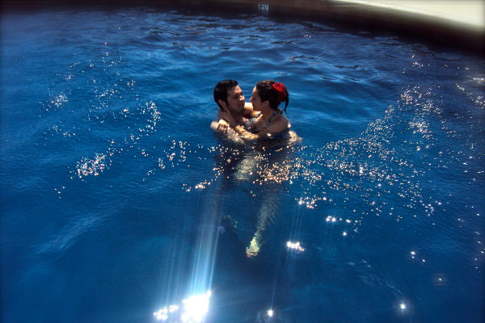
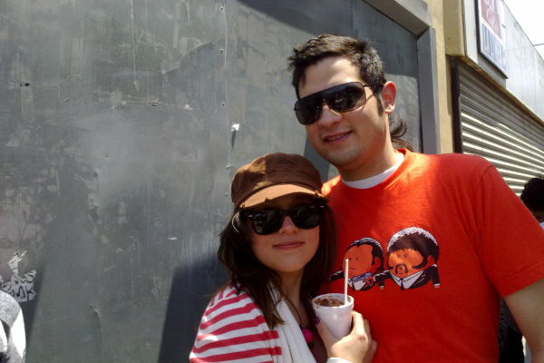
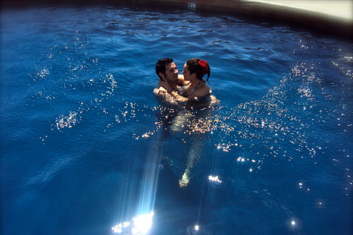
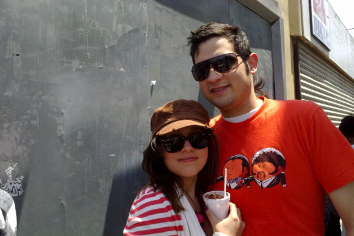

Boda de Elisa
Preparandonos para la boda de Mely
De novios en disney
Despedida vaquera de Yari
Sonrientes en el bautizo de Milka
Día soleado en el USS Midway
Recibiendo el año nuevo
Celebrando nuestro aniversario
En la rumurosa rumbo a San Luis
Acampando en rancho ojai
Cenando en Caesar's
V-J Day
Asoleandonos
Haciendo línea para el artwalk
En el hongo
Felices y fotogénicos
Con cara de niños aun
El ataque del monstruo besucón
Con Guya, nuestra única mascota
En L.A. Cetto
En disney, aunque no sabemos quien es goofy aun
Concierto de 311 y Sublime
Cumpleaños 26 de Gustavo

 



 


